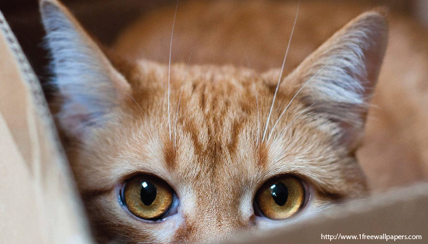
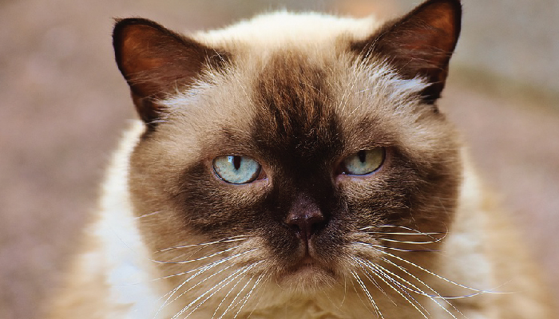
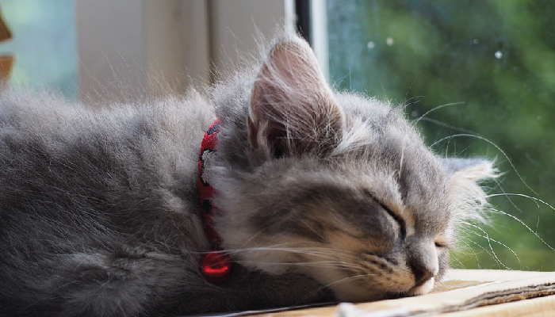

Pet Channel
| แมวอยากรู้อยากเห็น เจ้าน้องแมวตัวน้อยที่มีลักษณะนิสัยแบบนี้จะขี้สงสัย มีความอยากรู้อยากเห็น และชอบสำรวจทุกสิ่งทุกอย่างที่มันพบเห็น ซึ่งหลายๆ คนมักจะชื่นชอบน้องแมวแบบนี้มาก แต่ควรระวังไว้ด้วยนิดนึง เพราะว่าข้าวของทุกสิ่งอย่างในบ้านจะถูกพวกมันทำการสำรวจ ตรวจสอบ วินิจฉัย อย่างจริงจังเลยทีเดียว |
| แมวขี้เล่น นอกจากนิสัยอยากรู้อยากเห็นแล้ว อีกนิสัยที่พ่วงตามกันมาคงจะหนีไม่พ้นความขี้เล่นของเจ้าแมวน้อย ที่พยายามจะสำรวจทุกสิ่งอย่าง เมื่อเจอสิ่งที่สนใจก็อยากจะลองสัมผัส ลองจับต้อง บางครั้งก็อาจจะสนุกเกินเลยไปบ้างจนข้าวของเสียหาย เลอะเทอะ แต่ก็ไม่เป็นไรนะเจ้าเหมียว เหล่าทาสพร้อมให้อภัยเสมอ |
|  | แมวขี้กลัว น้องแมวที่มีลักษณะนิสัยแบบนี้อาจจะทำตัวห่างเหินกับมนุษย์ ชอบเก็บตัวเงียบอยู่ตามลำพัง และไม่ค่อยยอมให้ใครแตะเนื้อต้องตัวเท่าไหร่ อีกทั้งยังขี้ตกใจ หวาดระแวงแทบทุกอย่าง อ่อนไหวต่อสิ่งเร้ารอบข้างง่าย ดังนั้น ถ้าเลี้ยงแมวแบบนี้จึงควรมีพื้นที่เยอะๆ หรือมุมปลอดภัยให้พวกเจ้าเหมียวได้หลบซ่อนตัวซักหน่อย หรือจะเป็นเพียงลังกระดาษเล็กๆ ที่พอดีกับตัวน้องแมวก็คงเพียงพอแล้ว |
| แมวพูดมาก หากใครมีแมวนิสัยพูดมากอยู่ในครอบครัวล่ะก็ ต้องขอบอกเลยว่าเพื่อนๆ นั้นโชคดีมาก เพราะเพื่อนๆ จะไม่มีทางเหงาอย่างแน่นอน ไม่ว่าจะนั่ง นอน เดิน ทานข้าว หรือแม้กระทั่งตอนเข้าห้องน้ำ ก็จะมีเพื่อนคุยตลอดเวลาเลยล่ะ ไม่เหงาแน่ๆ แต่อย่างหนึ่งที่น้องแมวสีเทาเป็นห่วงคือ ถ้าบ้านหรือหอพักของเพื่อนๆ ไม่เก็บเลียงล่ะก็ ระวังเรื่องการผิดใจกับข้างบ้าน หรือเพื่อนร่วมห้องหน่อยนะคะ |
| แมวนักล่า น้องแมวที่มีนิสัยนี้จะมีสัญชาตญาณนักล่าอยู่ในร่างกายอย่างเต็มเปี่ยม เพราะแมวบางตัวยังคงเหลือสัญชาตญาณของสัตว์ป่าอยู่ พวกมันมักจะชอบทำลายทุกสิ่งที่ทำให้มันรู้สึกขัดใจ หรือสิ่งเร้าต่างๆ ที่ทำให้มันรู้สึกว่าอยากจะออกล่า ถ้าแมวของใครเป็นแบบนี้ เจ้าของคงจะคุ้นเคยกับการพบเห็นซากหนู หรือซากนกอยู่ในบ้านบ่อยๆ |
| แมวขี้อ้อน น้องแมวที่มีนิสัยแบบนี้จะติดคน และติดบ้านมาก ชอบนอนบนตักอุ่นๆ หรือบนหมอนเดียวกันกับเราเวลานอน ไม่ว่ามนุษย์ขยับไปไหนจะมีเจ้าเหมียวน้อยติดสอยห้อยตามไปทุกที่ น้องแมวจะคอยอยู่เคียงข้างเสมอ เรียกว่าตัวติดกันเป็นปาท่องโก๋ ไปไหนไปด้วยทั่วบ้านอย่างแน่นอน |
|  | แมวเฉยเมย น้องแมวประเภทนี้บอกได้คำเดียวว่า มีแมวเหมือนไม่มี คิดซะว่าเป็นตุ๊กตาประดับบ้าน ไม่ว่าคุณจะเรียกชื่อของเจ้าเหมียว เกาคอ ลูบหัว แปรงขน สิ่งตอบรับเดียวที่ได้อาจจะเป็นแววตาที่กรอกไปมาอย่างเรียบเฉย บางครั้งอาจจะขยับตัว และตื่นเต้นบ้างตอนที่ให้อาหาร ถ้าไม่เชื่อเพื่อนๆ ลองไปสำรวจเจ้าเหมียวจอมเฉยเมยที่บ้านดูสิคะ |
|  | แมวขี้เซา ตามชื่อเลยค่ะ กิจวัตรประจำวันที่ชื่นชอบคงไม่ใช่การนั่งริมหน้าต่างดูนกเหมือนน้องแมวประเภทอื่น แต่กิจกรรมอันโปรดปราณคือการนอนซะมากกว่า ที่จริงแล้วน้องแมวจะนอน 22 ชม.ต่อวัน อีก 2 ชม. คงเป็นการใช้เวลาไปกับการนั่งเลียขนทำความสะอาด กับกินอาหารมื้อโปรดล่ะมั้ง |
| แมวนวด จัดได้ว่าเป็นอุปนิสัยที่หายากที่สุดในหมู่ของอุปนิสัยแมวที่กล่าวมาทั้งหมด การมีแมวนวดในบ้านซักตัวคงเป็นอะไรที่ฟินมากๆ เลยทีเดียว ต่อให้เมื่อยเนื้อเมื่อยตัวมาจากการทำงานมากแค่ไหน หากได้รับการนวดจากแมวน้อยแสนรัก ก็น่าจะช่วยให้รู้สึกสดชื่นขึ้นมาทันตาแล้วล่ะค่ะ |
| แมวนักรัก น้องแมวลักษณะนี้จะชอบคลุกคลี และเล่นกับแมวด้วยกัน ซึ่งเหมาะกับการเป็นสัตว์เลี้ยงในบ้านมากๆ เพราะพวกมันไม่ได้ต้องการความรัก ความเอาใจใส่แบบสุดๆ จากคนสักเท่าไหร่ ขอแค่มีแมวอีกตัวอยู่ด้วยกันในบ้านก็มีความสุขมากๆ แล้วค่ะ |